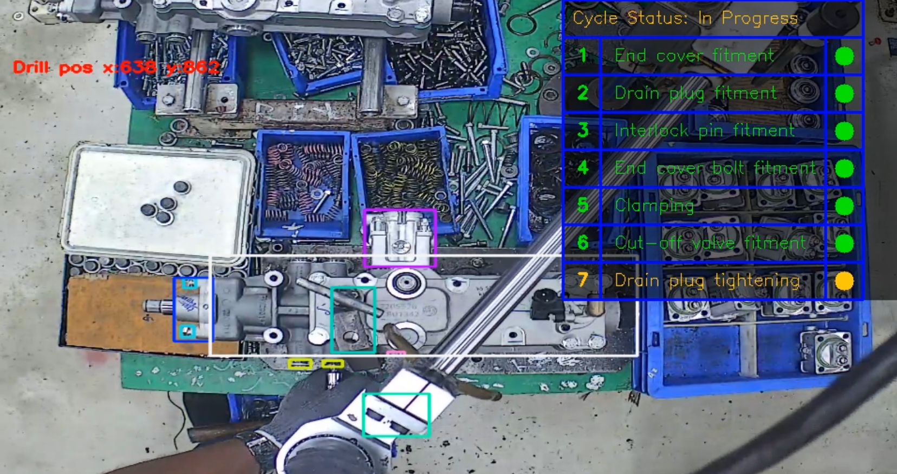
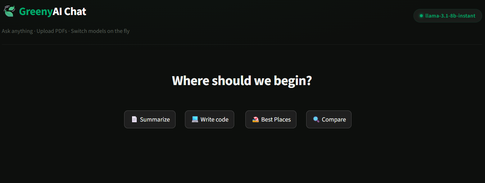

I build computer vision systems that don't just detect things — they decide things. My focus is turning raw model output into signals a factory floor can actually trust, using spatial logic and temporal tracking, and owning the pipeline end to end, from raw data to live deployment.
A high mAP score is where the real work starts, not where it ends. Once a model hits a factory floor, it has to reason about position, sequence, and time — not just "is the object there." A detection that's right 98% of the time can still be useless in production if the other 2% sets off a false alarm every ten minutes.
That's the gap I work in. I layer centroid-based spatial checks, temporal smoothing, and rule-based state machines on top of detection models, so the output is something an operations team can actually act on — not just a bounding box.
I own the whole pipeline: labeling the data, training the model, shipping it, watching how it behaves in production, and writing down exactly where it still breaks, so nobody gets surprised later.

● ProductionA fixed-camera vision system that checks drill-tightening compliance on the assembly line. Frame-by-frame detection alone wasn't reliable enough, so I built a logic layer on top — centroid ROI checks, a state machine, and temporal smoothing — that turns noisy detections into a compliance signal the floor can actually trust.

● LiveA chat assistant that actually reads what you hand it — drop in a PDF and it answers questions grounded in that document, powered by Groq-hosted Llama models with instant model switching. Conversations persist across sessions via Supabase, with one-click chat export built in.
Try it Live ↗An offline Q&A and summarization pipeline — Mistral and LLaMA running locally through Ollama, with PaddleOCR, Tesseract, and HuggingFace handling multimodal extraction. No cloud calls, built for air-gapped enterprise environments.
View Repository ↗Replaced a fully manual QC process with batch PDF processing — pulls 35+ structured fields across 50+ PDFs per run and outputs a formatted Excel report. Cut review time by roughly 90%.
View Repository ↗Scrapes job postings across multiple platforms, ranks them by keyword relevance, dedupes across sources, and tracks everything on one dashboard — a fully automated path from search to shortlist.
View Repository ↗Looking for roles in applied computer vision, industrial AI, or real-time ML systems — somewhere I can own a pipeline end to end, not just hand off a model and move on.
Based in Chennai. Open to on-site, hybrid, or remote.